肿瘤科医师狂喜,15分RNA修饰数据挖掘文章
原文：https://mp.weixin.qq.com/s?__biz=MzAwMzIzOTk5OQ==&mid=2247499433&idx=1&sn=7627084105a4629e4adf968ba31e0cf8&chksm=9b3c87f9ac4b0eef50acde479629378590786280c0b3b7bfd256a86a048fccc15f986cb67b89#rd 合集：文献速递
Biomamba荐语
与这个系列的前面一些论文类似，这次给大家推荐的是一篇纯生物信息学数据挖掘的文章，换句话说，这又是一篇不需要支出科研经费（白嫖 ）的论文(当然，生信分析用的服务器还是得掏点费用的)。一般来说，纯数据挖掘、没有实验验证的文章影响因子普遍比有实验验证的文章低一些。尤其是肿瘤领域的TCGA数据挖掘，铺天盖地的1分、2分、3分的文章；大量的灌水导致了目前纯生信文章的影响因子贬值。更离谱的是，大家似乎都喜欢蹭热度，最近一窝蜂的研究单基因套路、细胞焦亡、铁死亡诸如此类的，现在恨不得把门捷列夫的元素周期表挨个都“死”一遍。一方面可能这些话题确实研究价值巨大，不过另一方面我个人不太喜欢这种趋之若鹜的follow。这次的这篇文章便是在去年各类“死亡”火热时另辟蹊径，通过RNA修饰研究结直肠癌（colorectal cancer，CRC）并发表影响因子高达15 分的文章（Molecular Cancer），也许对各位临床工作人员会有些许的启发，愿大家都能冲出“ 低分陷阱”。doi: 10.1186/s12943-021-01322-w
链接：
https://pubmed.ncbi.nlm.nih.gov/33557837/
Abstract
● 1. RNA修饰
RNA表观修饰主要有m6A，m1A，alternative polyadenylation，adenosine-to-inosine RNA editing这四种，共涉及26种酶。
● 2. 主要发现
通过对这些基因的无监督式聚类可将这26种基因分为两类并对样本进行分型。并创造了一种关联分析方法“WM_Score”，一方面来说可以将肿瘤与健康样本相区分；另一方面在肿瘤患者内部对肿瘤微环境、免疫应答等方面产生差异并影响患者的生存期。高WM_Score与低WM_Score类群之间在各类通路确实存在各类差异，因此可作为良好的诊断指标。
Introduction
● 1. RNA修饰
CRC的地位及流行特征这里就不做重点介绍了，各位一定比我了解，这是目前是癌症死亡率中排第名二的杀手。目前，CRC已被证实与RAS-MAPK、WNT、PI3K等信号通路相关，但表观遗传学影响着免疫应答与CRC的病因学。而RNA修饰又是表观遗传学的重要组成部分，与CRC存在潜在联系（仍未被研究透彻）。这一区域的空白，将由这篇论文填写。
● 2. 四种最常见的RNA修饰
RNA修饰的种类共有170种，本研究不可能涵盖所有，各类修饰之间也存在竞争性，而腺苷酸修饰是RNA修饰中最常见的，因此作者挑选了其中最主要的四种，并对这几种修饰过程与CRC之间做了关联研究。整理并研究了涉及这四种修饰过程中涉及的26种酶（下文统称为writer ）。
● 3. 免疫&RNA修饰
目前immune checkpoint blockade（ICB）疗法存在相应效率低下的问题，而RNA修饰与免疫反应、肿瘤免疫微环境 具有潜在联系，因此“writer”的研究十分有必要。免疫功能素来与肿瘤的发生具有联系，与RNA修饰相关的网路图谱有待构建。
Results
● 1. 基因及转录本差异
在确定writer的表达量 对CRC的影响之前，首先应排除基因突变/序列差异 带来的影响。经基因组序列确实发现ZC3H13、PCF11、KIAA1429在样本中的突变确实与生存期相关，并整理出突变类型、比例、分类、位置等信息如下图所示，不难看出，这些基因在人群中存在一定程度的突变。
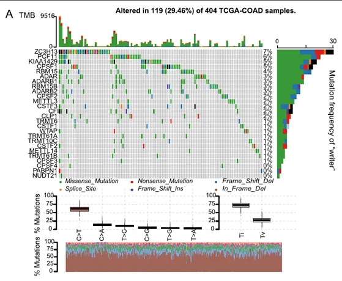
不可否认的是，通过生存分析的确发现这些writer的突变对患者生存期具有显著影响：
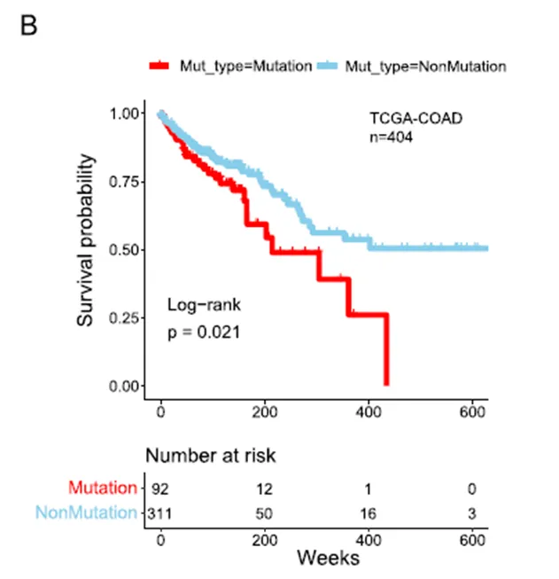
不仅是突变，拷贝数变异（CNV）同样需要在表达量分析前被排除。CNV分析后发现CSTF1、CPSF1/4、ZC3H13、KIAA1429存在广泛的CNV。
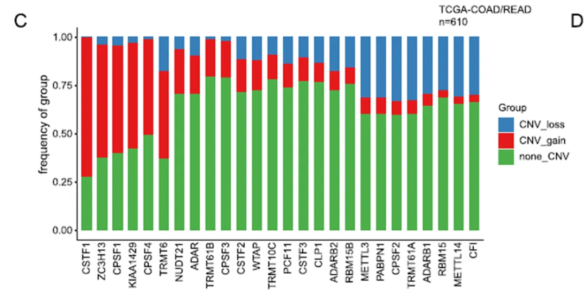
在解析完结构变异后作者统计了26种writer基因的表达量在tumor与normal组中的表达量，其中多数writer在normal组中上调 ，并且多数上调基因伴随着cnv gain，这里可以初步证明CNV只是影响基因表达的因素之一，尤其是一些cnv loss的writer表达量也上升了，因此CNV并不是决定性因素 。RNA修饰在基因表达中也同样值得被研究。作者这里也交代的很清楚，基因结构方面的差异已经完完全全展示给大家，后面就该展示writer的表达量了。
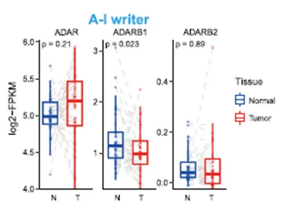
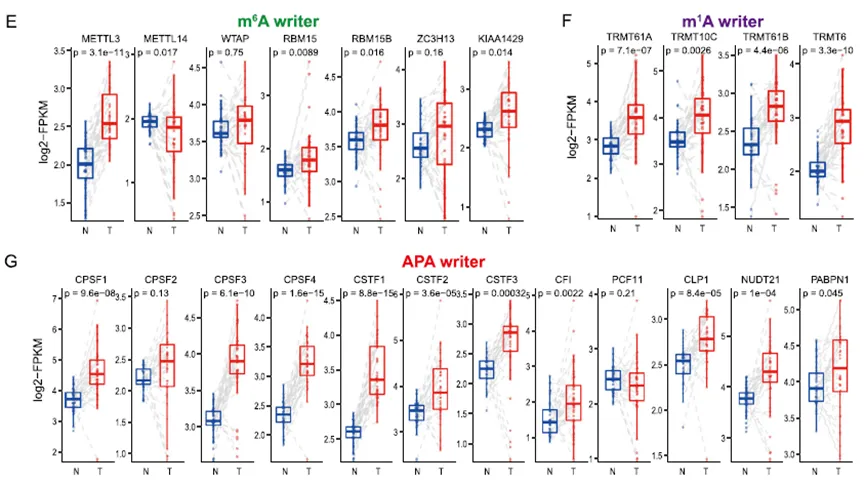
● 2. writer表达量分群与免疫浸润
首先，这些writers在一千多个样本中的表达量能够通过非监督式的聚类被分为两种模式（727个cluster_1，968个cluster_2）：
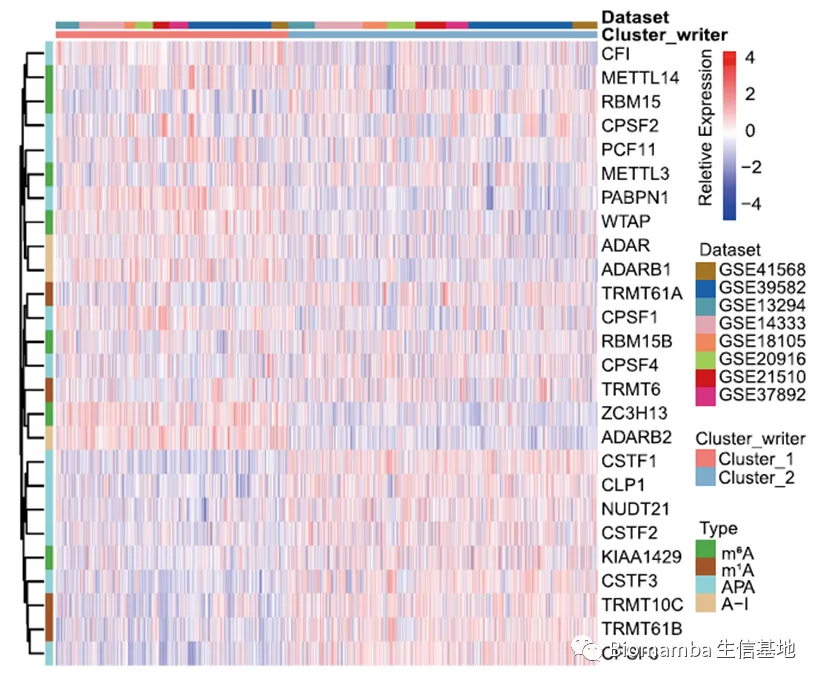
Cluter1与cluster2之间差异基因的的富集分析也显示出前者富集于stromal and carcinogenic activation，TGF-β singnaling pathway和cell adhension通路，而cluster2富集于proliferation and apoptosis，mismatch repair pathways等通路：
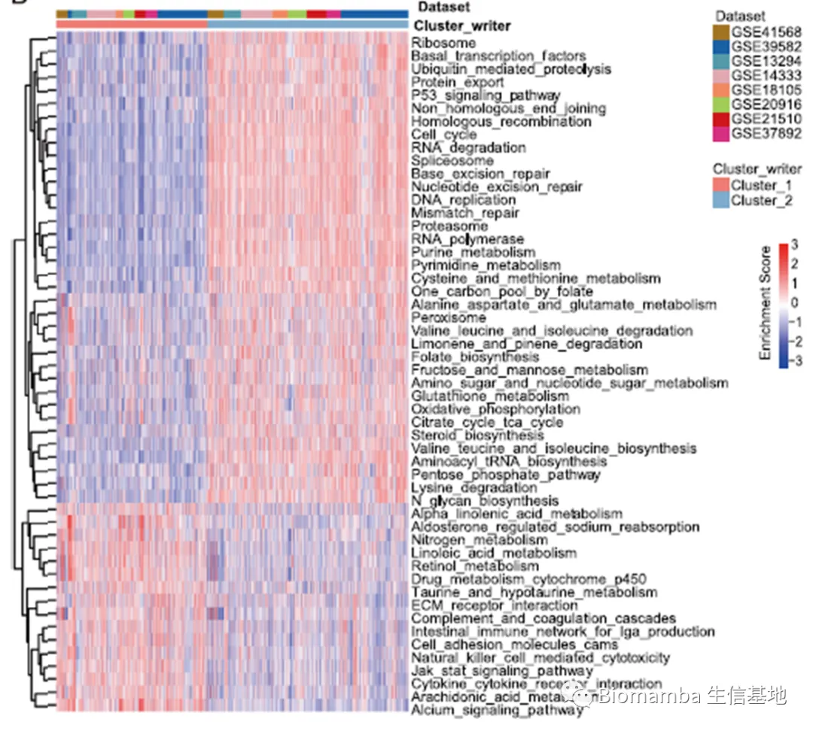
并且两种cluster在CRC的生存期上具有显著不同，cluster1患者的生存率更低，初步可以证明writer的变化会引起一些与肿瘤相关基因集的变化并且确实可以引起患者生存率的显著差异。
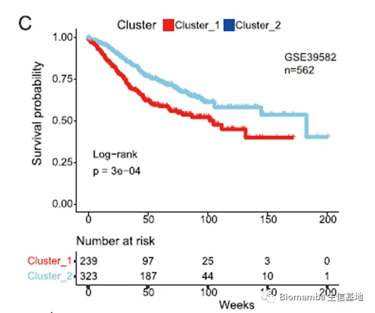
此处作者通过CIBERSORT软件（这一软件我们之前有花篇幅介绍过：什么？不做单细胞也能分析细胞类群和免疫浸润？ ）利用去卷积算法以对CRC中的免疫浸润情况进行打分，通过对support vector regression判断免疫细胞类型。发现其中一些writer与免疫细胞浸润密切相关：
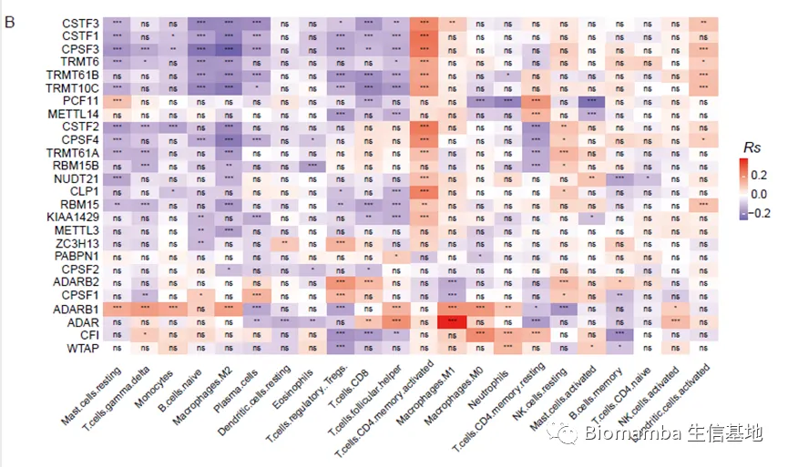
其中M2 macrophage、Tregs、T follicular helper cells、T γδ cells在cluster1中更高；DCs、NKC、M1 Mac浸润在cluster2中更高。不难看出，cluster1浸润的免疫细胞主要是免疫抑制细胞 ，这可能是cluster1预后较差的原因之一，并且Mac的极化在免疫进程中十分重要：
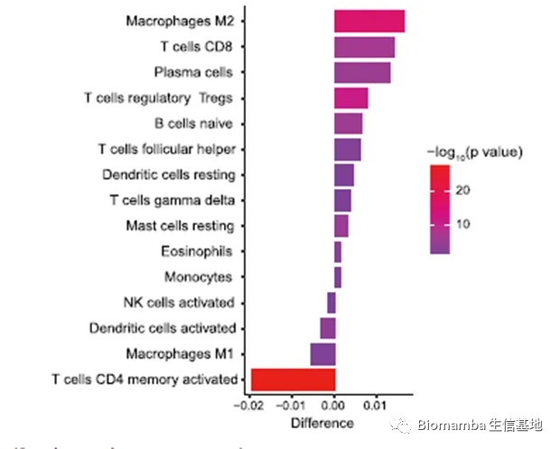
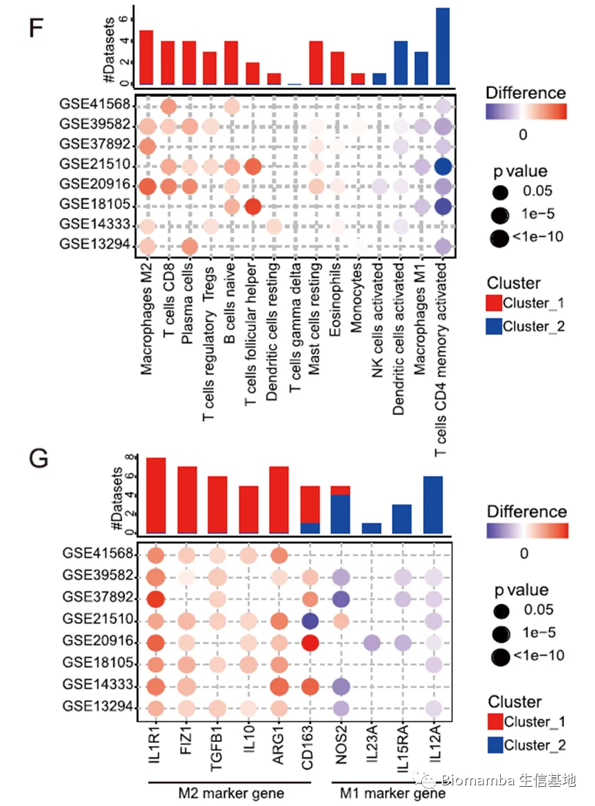
● 3. 差异基因功能
作者对cluster1与cluster2之间进行组间差异分析，对得到的差异基因进行富集分析，发现通路主要集中于DNA replication、cell cycle、tRNA metabolic process、p53、Il-17等信号通路。
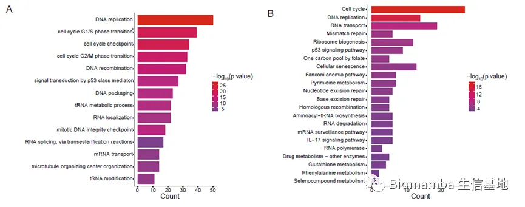
对这些差异基因分为两类cluster后，发现clusterA的预后性更差：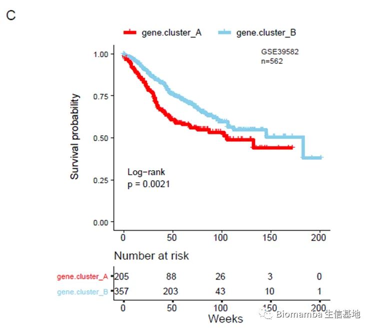
****● 4. WM_Score
为了考虑到数据集的异质性与复杂性，作者此处创建了一个“WM_Score”的概念，以帮助区分样本。这一分值在cluster1高于cluster2，证明WM_Score可以用来区分writer的状态，并且cluster.gene.A中的WM_Score要高于cluster.gene.B，即DEG是受到writer的影响并能够通过WN_Score来评估的，初步证明了WM_Score这一评分机制科学有效 。
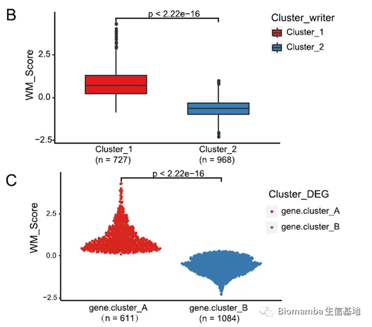
将样本按VM_S高低进行分组后，免疫浸润情况也出现了此前cluster1、2之间的类似差异，再次证明了这一评分机制的准确性。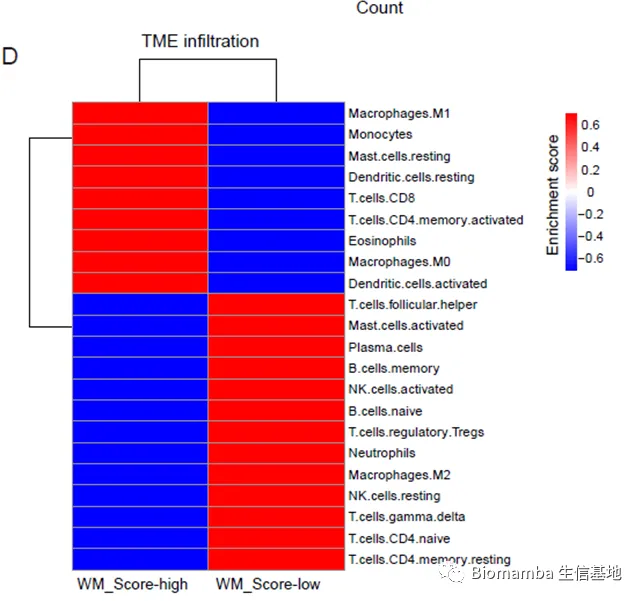
为了验证write聚类、gene聚类、WM_Score高低之间的一致性，作者对这些变量进行了交叉分析。韦恩图与柱状图也显示cluster_1/2，cluster_gene_A/B与VM评分具有较好的一致性，即WM_Score high能够对应Cluster_1及gene.cluser_A，反之亦然。
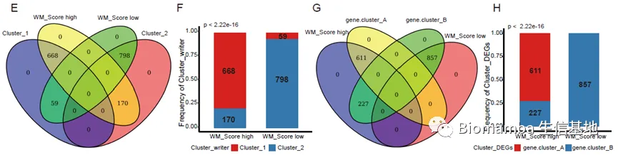
生存分析与风险评估（多元回归COX分析）也显示VM_S的划分对CRC预后存在影响（通过AUC曲线可判断WM_S的模型的拟合程度，一般0.5~0.7达标、0.7~0.8良好、0.8~1优秀）：
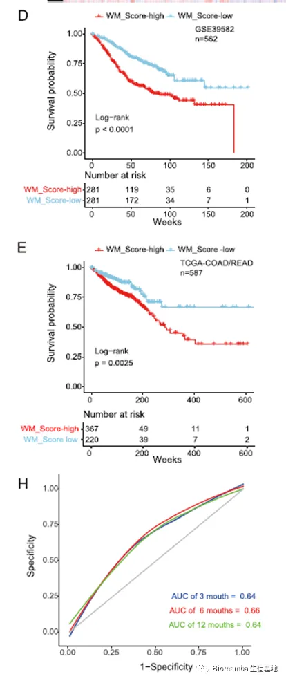
COX回归分析通常与生存分析如影随形，可用于评估自变量对因变量的影响程度，并能够校正其他混杂因素。对连续数值型变量、离散型分类变量、顺序变量均可建模分析。取某一自变量系数为e的幂数，得到的值即为HR值（风险比例），当HR>1则为危险因素，当系数<1则为保护因素。即高WM_Score为风险因素，WM_Score低为保护因素 。
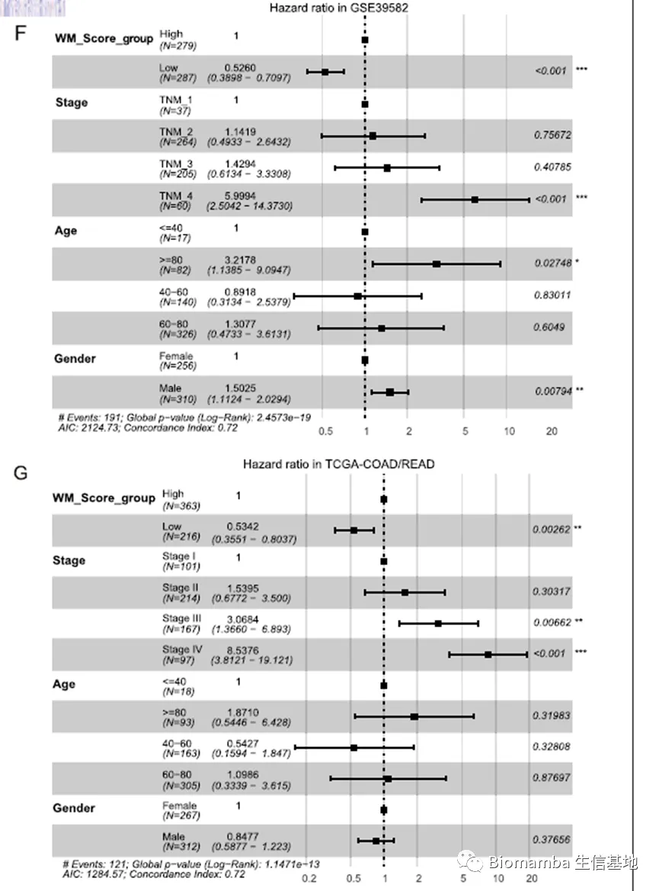
CRC具有四种亚型：CMS1-4，为了探寻VM_S是否能够帮助区分亚型分类，进行VM评分后发现在某些亚群之间具有显著差异（但在数据集之间重复性较差）。随着分期进程，WM_S逐渐攀升 。（CMS4主要在晚期被诊断出）。
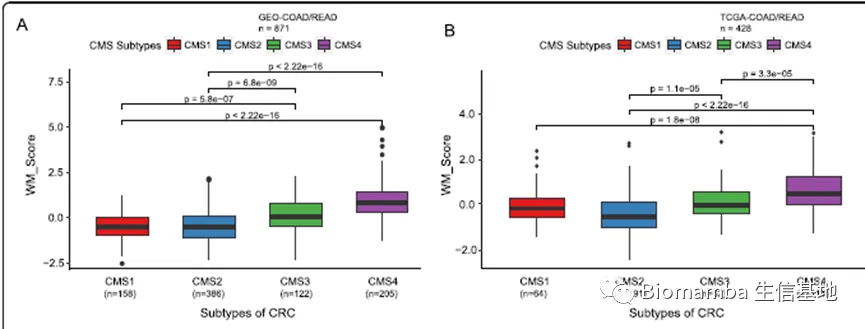
此外WM_S在，CRC诊断时的分期、转移与非转移之间也存在差异，这进一步证明WM_S与CRC的预后存在关系：
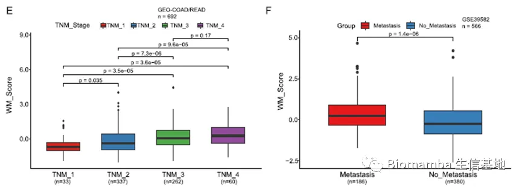
这时，又一个热度极高的分析出现了——miRNA。上文WM_S的评分对象仅为26个writer，为了探寻RNA转运、定位、翻译等转录后生物过程。作者整理出WM_S高低组的差异miRNA并整理网络关系如下，与此前结果相一致的是EMT、Apoptosis、Cell circle相关的基因通路依然能被富集到。也就是说，WM_Score发挥作用时，这些miRNA也逃不了干系 。
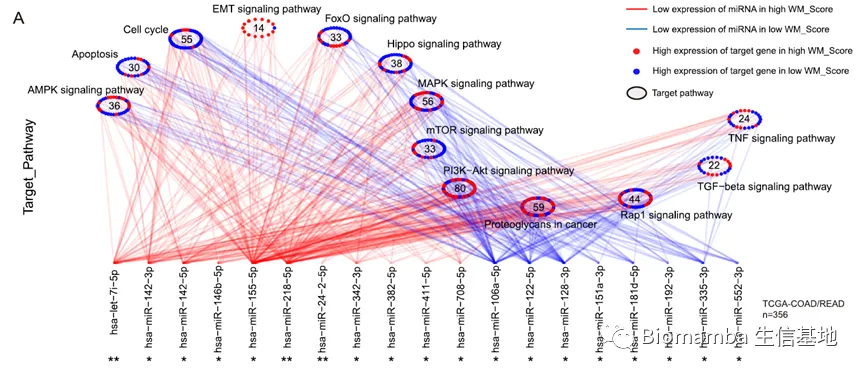
对于APA与A→I这两种修饰，在两个数据集间按照高低程度进行差异分析，APA依据长短，A→I根据发生频率，发现不同的修饰程度会影响生存曲线，但A→I通过RNA-Seq较难捕捉，可信度成疑。
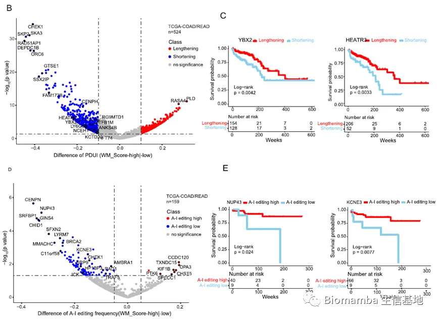
****● 5. 在治疗应用方面得潜在贡献
作者建立了WM_S这一良好的评价指标，期望其能够用于指导临床治疗。利用GDSC进行药物敏感性预测，与WM_S进行相关性分析，其中24种药物敏感性与WM_S具有相关性，这些抑制剂与对应的通路相对应。如MEK inhibitor Selumetinib, mTOR inhibitor LJI308, EGFR inhibitor AZD3759。18种耐药性与WM_S相关, including cell cycle checkpoint kinase inhibitor AZZD7662, Bcl-2 inhibitor AZD5991。
与WM_S高组敏感性关联的通路包括 MAPK, mTOR, and VEGF signaling pathways.与WM_S低组敏感性关联的通路包括 apoptosis and cell cycle signaling pathway. 因此通过WM_S鉴别RNA修饰模式并预测敏感性用于临床具有指导意义 ：
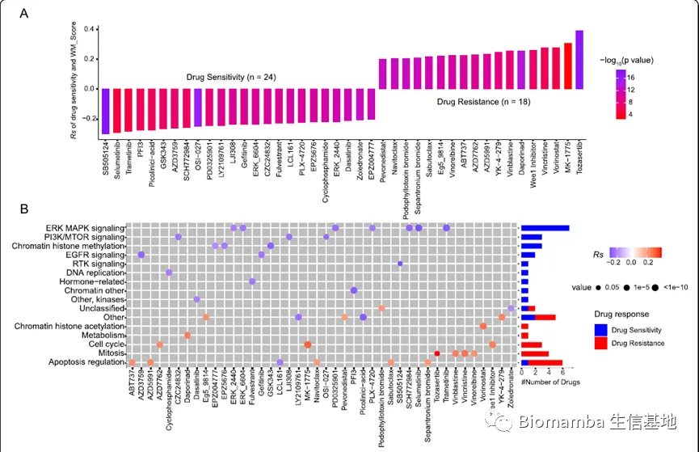
最后，作者聚焦于PD1疗法，证明WM_S高低在bladder cancer间具有生存差异，并且在四个分期之间具有明显不同，分期之间的比例也与此前CRC类似。随着免疫程度的上升，WM_呈现下降的趋势，最终在PD-L1疗法中，WM_S高组也无法收获较好的疗效。也就是说，WM_Score的上升在膀胱癌中也有助于“免疫逃逸”。
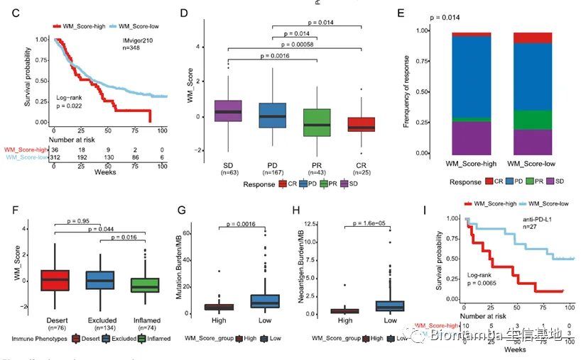
总结
RNA修饰的研究其实也不算少，本文的亮点主要是通过大量的分析（八个数据集共1697个样本 ）评估了RNA腺苷酸修饰与CRC预后、治疗方案的潜在关系，并成功构建了WM_Score这一评分概念。经过多次的验证，我不由得觉得这26种writer理应被制作成芯片以快速得对CCR病人进行检测分型，从而起到个性化治疗的目的。因此，这篇推送我们会将这篇文章拆解开来，详细的转述一番 ，建议大家耐心看完，有必要时推荐阅读原文 。

如何联系我们
 公众号后台消息更新不及时，超过48h便不允许回复读者消息，这里给大家留一下领取资料、免费服务(有root权限的共享服务器,你没有体验过的全新版本!)的微信号 ，方便各位随时交流、提建议(科研任务繁重，回复不及时请见谅)。此外呼声一直很高的交流群 也建好了，欢迎大家入群讨论：永久免费的千人生信、科研交流群
公众号后台消息更新不及时，超过48h便不允许回复读者消息，这里给大家留一下领取资料、免费服务(有root权限的共享服务器,你没有体验过的全新版本!)的微信号 ，方便各位随时交流、提建议(科研任务繁重，回复不及时请见谅)。此外呼声一直很高的交流群 也建好了，欢迎大家入群讨论：永久免费的千人生信、科研交流群
大家可以阅读完这几篇之后添加给生信入门初学者的小贴士 如何搜索公众号过往发布内容

 您点的每个赞和在看，我都认真当成了喜欢
您点的每个赞和在看，我都认真当成了喜欢